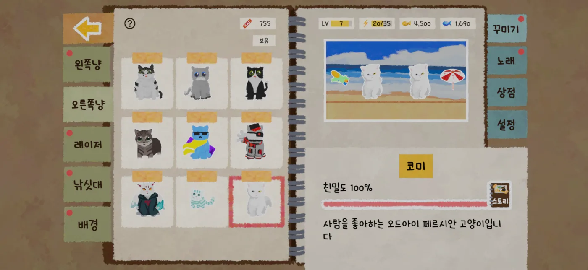
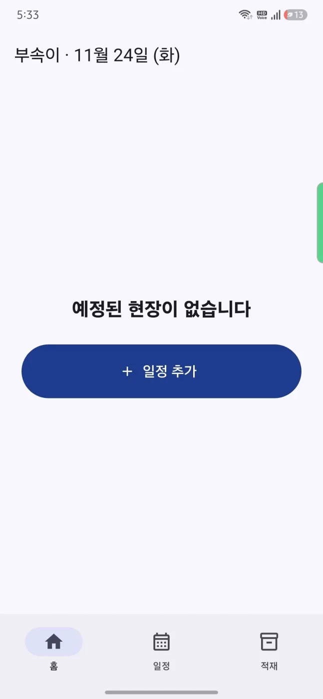
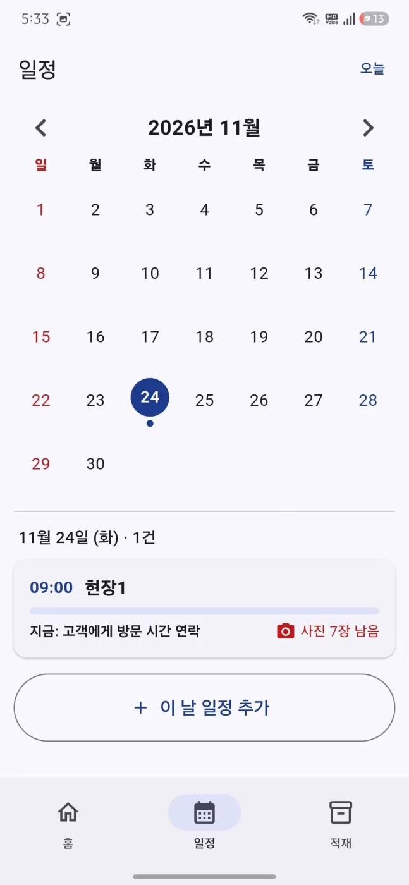
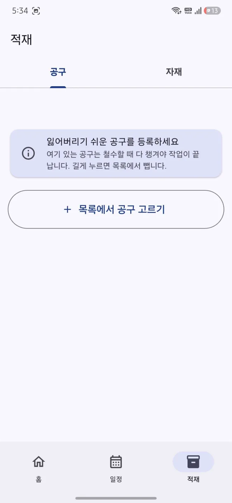
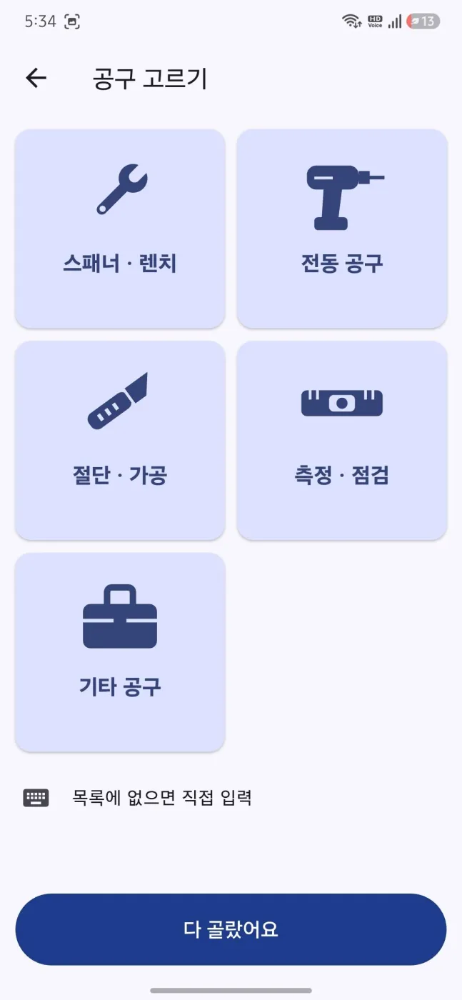

“이렇게 하면
더 재밌지 않을까?”
플레이어의 입장에서 재미를 탐구하고 설계합니다.
그 질문을 최대한 받아들이는 게임을 만들고 싶습니다.
문현웅Game Designer

“이렇게 하면
더 재밌지 않을까?”
플레이어의 입장에서 재미를 탐구하고 설계합니다.
그 질문을 최대한 받아들이는 게임을 만들고 싶습니다.
두 고양이와 함께 박자를 맞추는 모바일 리듬게임
▶ 공식 트레일러 · 유튜브에서 보기


Claude Code와 Unity MCP를 연결해 씬 수정과 반복 구현은 AI에게, 문제 정의·판정 기준·검수는 직접. 코드 수정은 AI 분석 → 변경 후보 → 승인 후 반영 순서로 진행했습니다.
AdMob 광고와 인앱결제 BM 적용
사냥과 채집으로 재료를 모아 요리·맥주를 파는 식당 경영 어드벤처
구현 방법과 버그 원인을 여러 AI에 같은 조건으로 물어 교차 검증하고, 답이 갈리면 직접 테스트해 맞는 방법을 골랐습니다.
작업 영역을 나눠 병행 개발하고, 팀원이 설계한 상호작용·인벤토리 시스템에 제 기능을 연동해 메인 루프를 완성했습니다.
1인 보일러 설치기사를 위한 현장 관리 앱
시작 — 보일러 설치 현장에서 일하며 부속과 자재를 빠뜨려 창고를 다시 오가는 일이 잦았습니다.
'부속이'는 현장에서 부속과 자재를 빠짐없이 챙겨 준다는 뜻입니다.




기능·화면·용어 같은 기획 결정은 AI가 2~3개 대안과 장단점을 내면 제가 고른 뒤에만 구현했습니다. 현장 작업 메모는 AI와 함께 체크리스트 데이터로 구조화했습니다.
기능을 더하기보다 덜어내는 방향으로 설계를 다듬어 APK 1.0.1까지 배포했습니다.